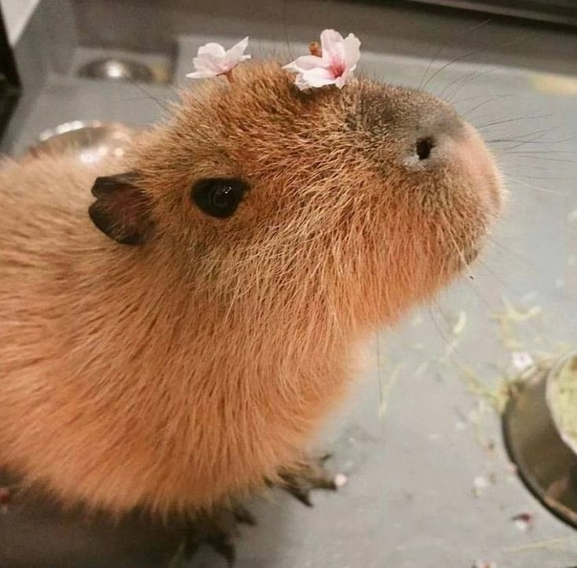

کپیربارا بزرگترین جونده زنده دنیاست و وزنش میتونه به حدود ۴۰ تا ۶۵ کیلوگرم برسه. با این که ظاهرشون سادهست، بدنشون کاملا برای زندگی نیمهآبی ساخته شده.
پاهاشون حالت پردهدار داره و همین باعث میشه شنا کردن براشون خیلی راحت باشه. در واقع بخش زیادی از زندگیشون کنار آب یا داخل آب میگذره.
برخلاف خیلی از جوندهها، کپی باراها کاملا اجتماعی هستن و معمولا در گروههای چندتایی یا حتی گلههای بزرگ زندگی میکنن.
یکی از ویژگیهای رفتاری جالبشون اینه که تنش خیلی پایینی دارن و معمولا با حیوانات دیگه هم کنار میان؛ به همین خاطر زیاد دیده میشه که پرندهها یا حتی حیوانات کوچک روی بدنشون میشینن.
رژیم غذاییشون گیاهیه و بیشتر از علفها و گیاهان کنار رودخونه تغذیه میکنن. دندونهاشون هم مدام رشد میکنه و نیاز دارن همیشه چیزی بجوئن تا کوتاه بمونه.
از نظر رفتاری، یکی از آرومترین پستانداران شناخته میشن. همین ویژگی باعث شده توی فرهنگ اینترنتی تبدیل به نماد “آرامش مطلق” بشن.
عمرشون در طبیعت معمولا حدود ۸ تا ۱۰ ساله، ولی در شرایط محافظت شده میتونه بیشتر هم بشه 🦫